速览
动作是角色的动态，在《大乱斗》等作品中尤其重要。这个分类讲制作诀窍，但不太讲依赖工具等作业环境的部分，只谈概念。在《大乱斗》中企划斗士时，也会一并考虑招式与动作形象；樱井讲讲他如何把这些细节传达给动作设计师。首先不可或缺的是写动作列表：用文字写出包含全部动作的列表；这阶段动作形象用文字说明，并记下动作长度和攻击发生时间——在这阶段就要一边感受游戏性一边设定。待机、步行等只要循环的动作写成「循环」。接着，待机、移动、攻击等关键姿势用手办照片指定：拿出手办、摆姿势、拍照、调对比，再落到规格书中。看了这些姿势规格书，招式形象应该相当清楚了吧？每个斗士大约准备 70～80 张。原作有应参考的动作或招式时，也会用原作截图指定；离人形太远的则省略，只用文字。也许你觉得导演企划阶段信息这么多就能做得很准，但在制作工程中这只是序幕：要做成好的东西，需要各处做得无懈可击，设计师要思考的事堆成山。最重要的是，手办终究是手办，可动范围等和游戏模型天差地别，实际要靠动作设计师努力；多次监修仍可能做不好，那时也会放弃，但都是为了让游戏体验更好、让角色立住而用心制作。他对动作的指示，由全体动作设计师一起听：听制作诀窍和注意点，避免重蹈覆辙、提高经验。
1. 动作分类开篇 0:00
动作是角色的动态，在《大乱斗》等作品中尤其是重要的要素。这个分类讲制作诀窍，但不太讲依赖工具等作业环境的部分，只谈概念。
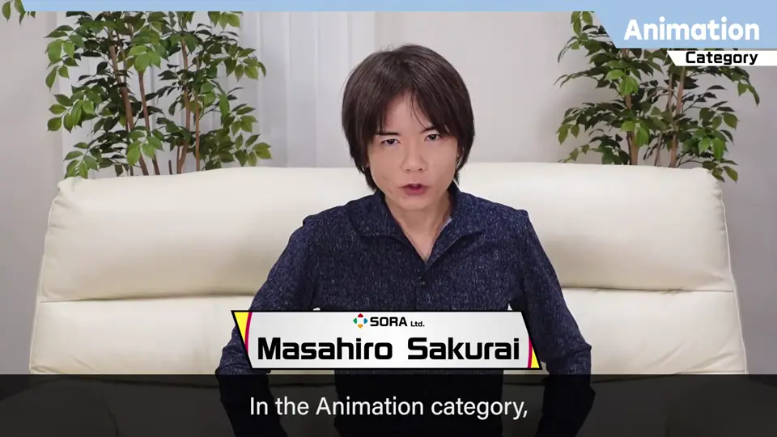
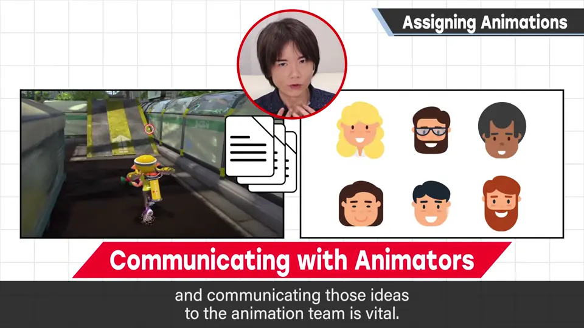
在《大乱斗》中企划斗士时，也会一并考虑招式与动作的形象。这里讲讲樱井是如何把这些细节传达给动作设计师的。
2. 动作列表 0:44
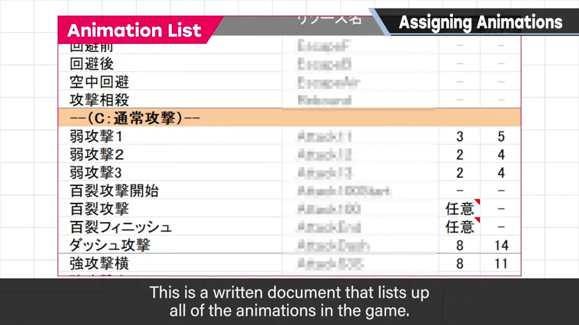
这阶段动作形象用文字说明，并记下动作长度和攻击发生时间——在这阶段就要一边感受游戏性一边设定。待机、步行等只要循环的动作写成「循环」。
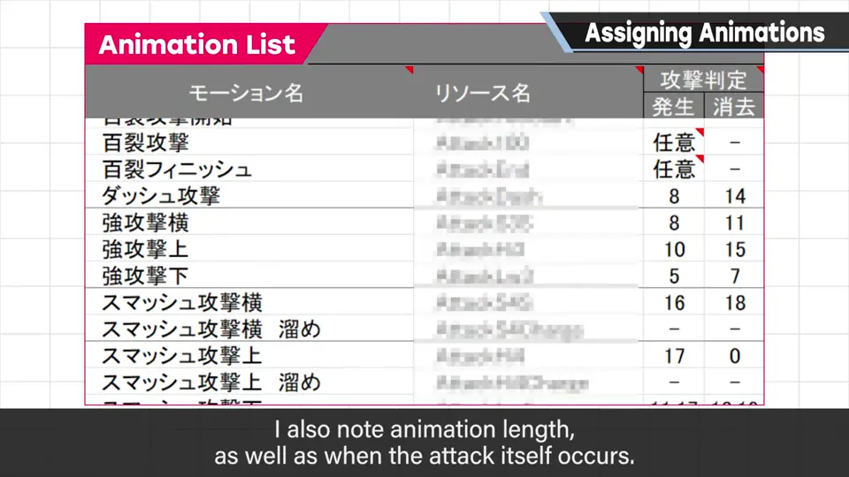
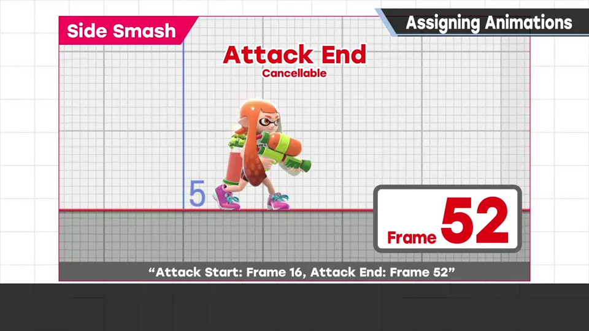
3. 用手办拍关键姿势 1:21
接着，待机、移动、攻击等关键姿势用手办照片来指定。
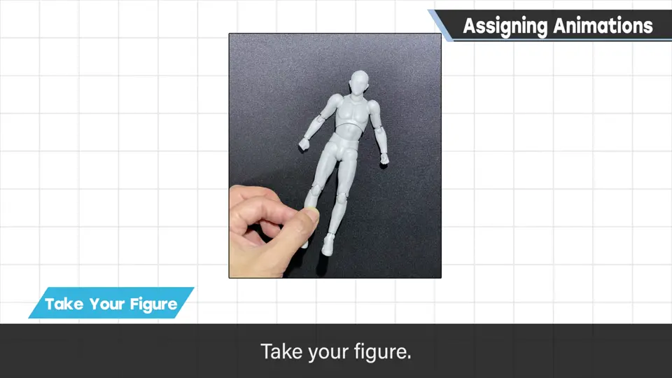
这样做出来的姿势规格书，介绍几张：
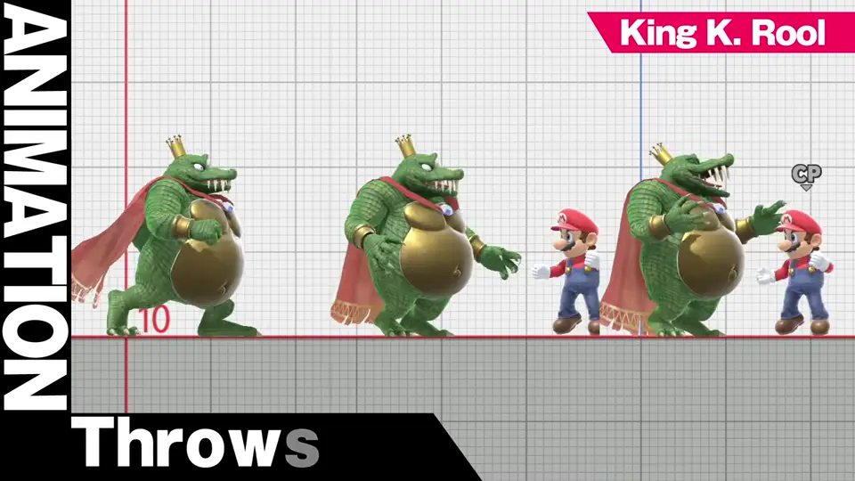
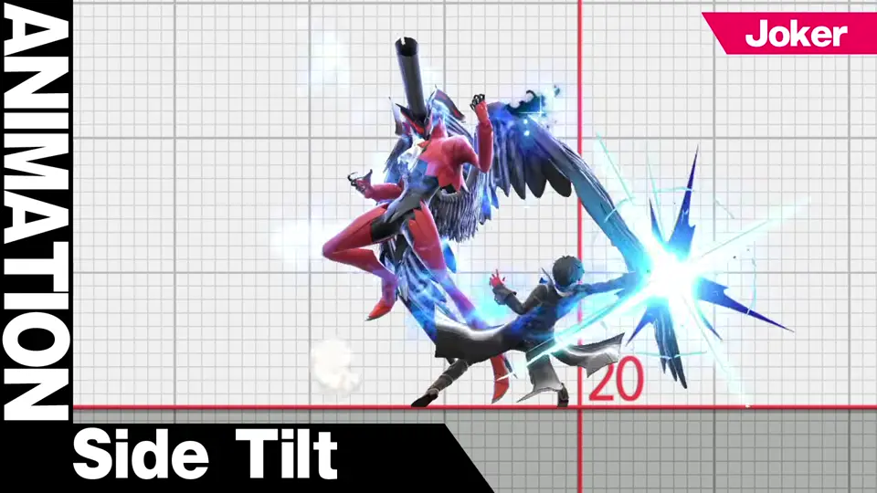
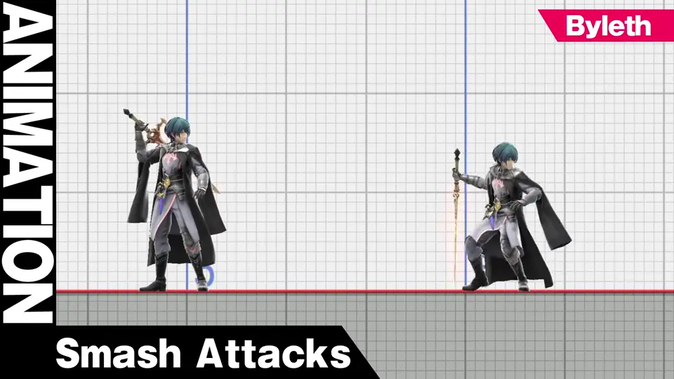
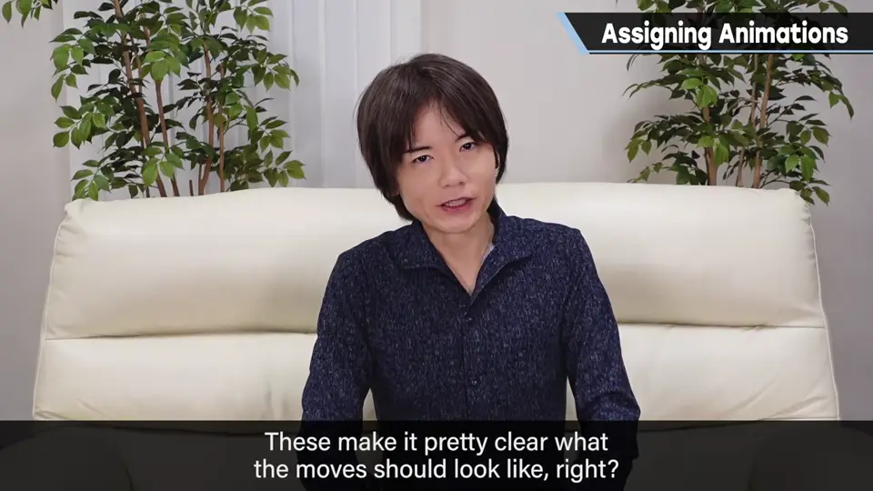
原作有应参考的动作或招式时，也会用原作截图来指定；离人形太远的则省略，只用文字传达形象。
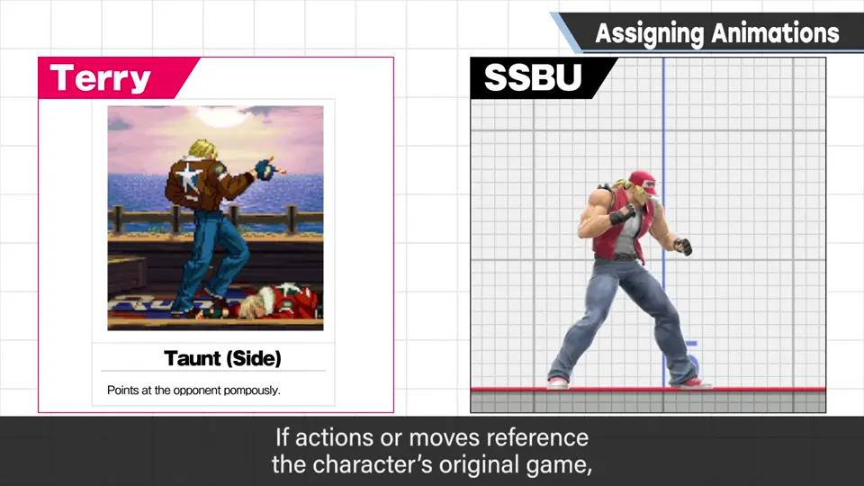
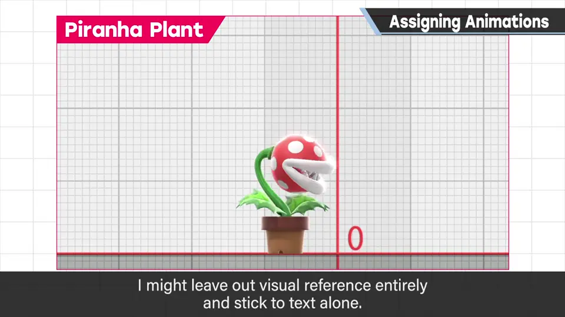
4. 这只是起点 3:28
也许你觉得导演企划阶段信息这么多，就能做得很准。但在制作工程中，这只是序幕：要做成好东西，需要各处做得无懈可击，设计师要思考的事堆成山。
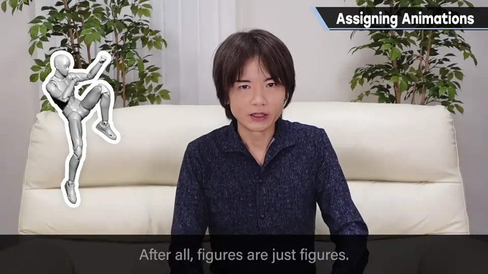
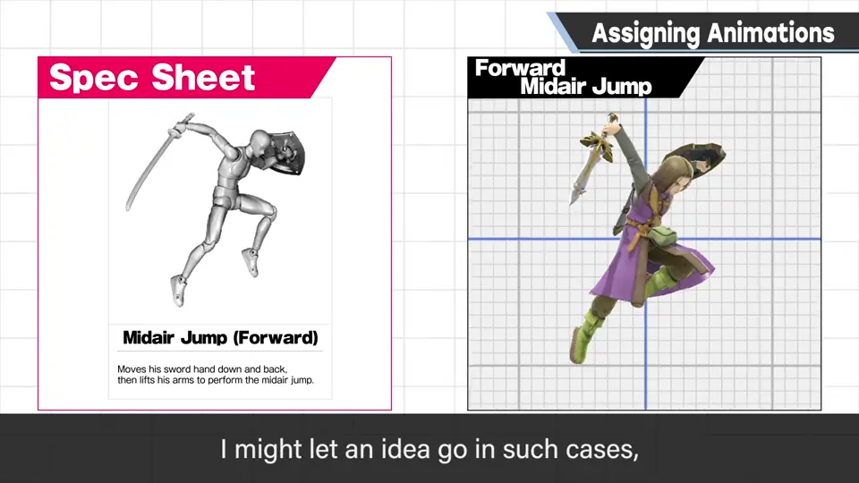
多次监修仍可能做不好，那时也会放弃；但都是为了让游戏成为更好的体验、让角色立住而用心制作的。
他对动作的指示，由全体动作设计师一起听：听制作诀窍和注意点，避免重蹈覆辙、提高经验。
自测题
1. 动作列表要写哪些信息？
全部动作的文字描述、动作长度、攻击发生时间；循环动作标为「循环」。 0:50
2. 关键姿势是怎么指定的？每个斗士大约多少张？
用手办摆姿势拍照、调对比、落到规格书；约 70～80 张。 1:40
3. 为什么规格书只是起点？
要做好需要大量细节思考；手办的可动范围与游戏模型差很多，要靠设计师努力。 3:35